WORKING DOCUMENTS
영웅전설: 시즌 콘텐츠, 길드·레이드, 영웅 성장의 기획 화면과 데이터 테이블 정의, 밸런스 작업 산출물입니다.
기억의 경계 · 도전과 성장 시즌별 영웅 편성과 스테이지 진행을 반복 던전·전용 성장으로 연결한 기획 화면입니다.
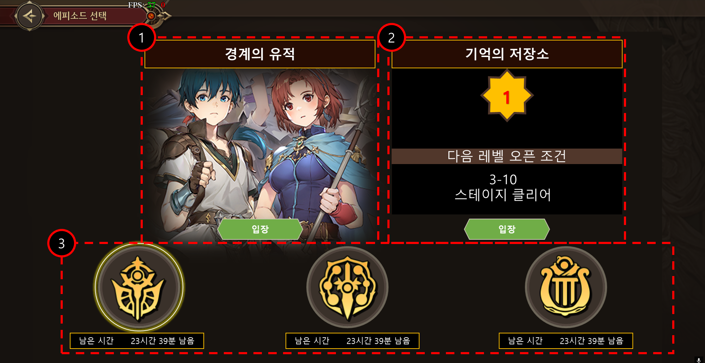
시즌별 콘텐츠 선택 시즌 상태와 참여 영웅, 스테이지·반복 던전 진입을 구분한 화면 시안입니다.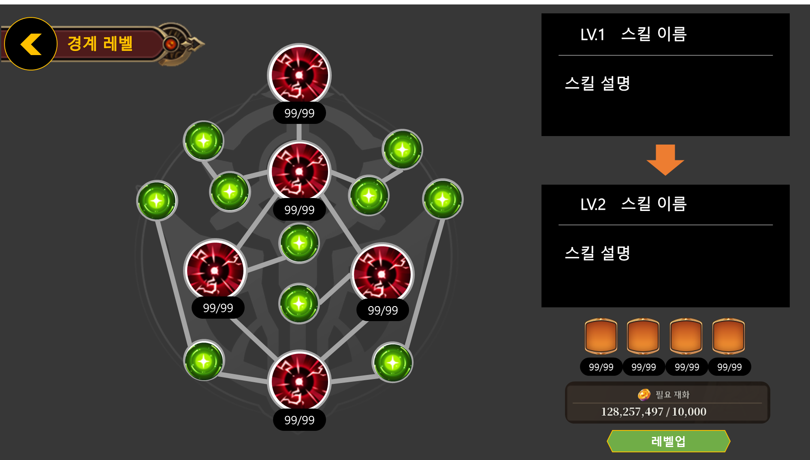
전용 성장 노드 선행 조건과 비용, 활성화·강화 상태를 정의한 화면입니다.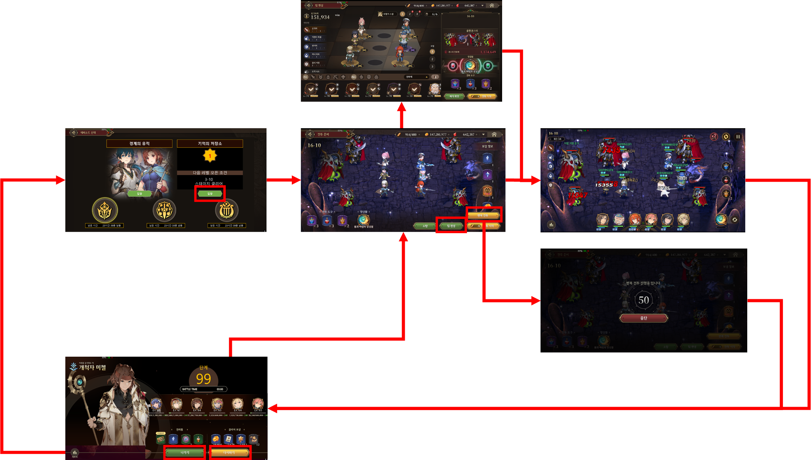
스테이지와 반복 던전의 연결 스테이지 진행에 따라 반복 던전이 열리는 진입 흐름을 정리했습니다.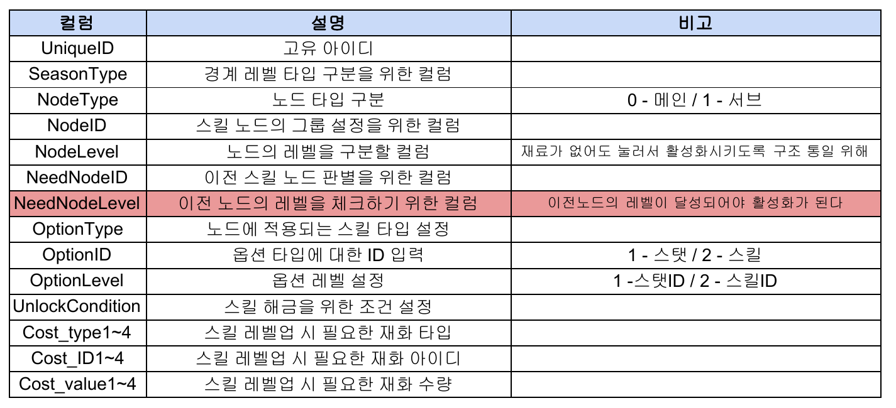
기억의 경계 성장 노드 테이블 노드 식별과 선행 조건, 효과 및 비용을 구분한 컬럼 정의입니다.길드 · 가입과 운영 가입 방식과 역할별 권한을 화면 상태로 연결하고, 개인 출석을 길드 경험치·레벨 성장에 연결했습니다.
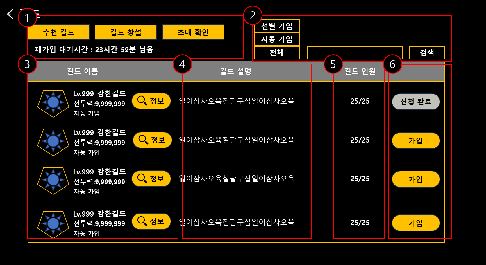
추천 길드와 가입 상태 가입 방식 필터와 대기 상태, 목록 표시 정보 및 버튼 정의입니다.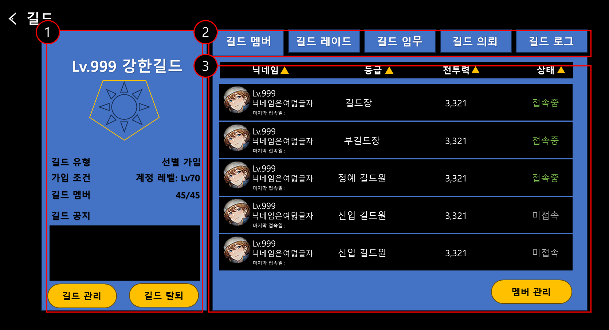
길드원 관리 길드원 목록과 역할별 관리 행동을 구분한 화면 시안입니다.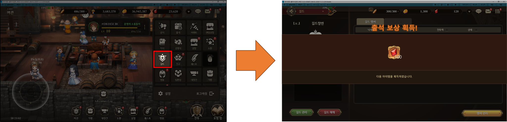
개인 출석과 보상 흐름 길드에서 출석 보상을 확인하는 화면 연결을 정리했습니다.길드 레이드 · 2팀 전투 선발·후발팀을 연속으로 사용하고, 두 팀 점수와 팀별 데미지 리포트를 확인하도록 정의했습니다. 최종 수정안에서는 입장 티켓을 소모하지 않으며, 아래 이전 시안의 티켓 표시는 제거 대상입니다.
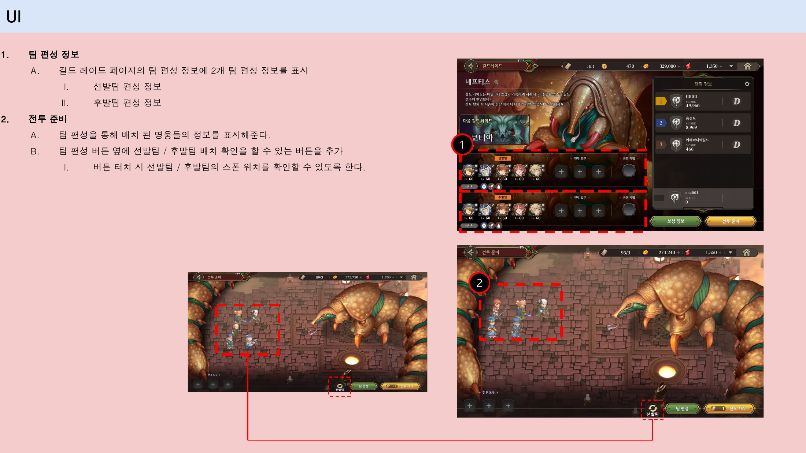
두 팀 편성 및 배치 팀 전환과 영웅 배치 조작을 정의한 2팀 전투 수정안입니다.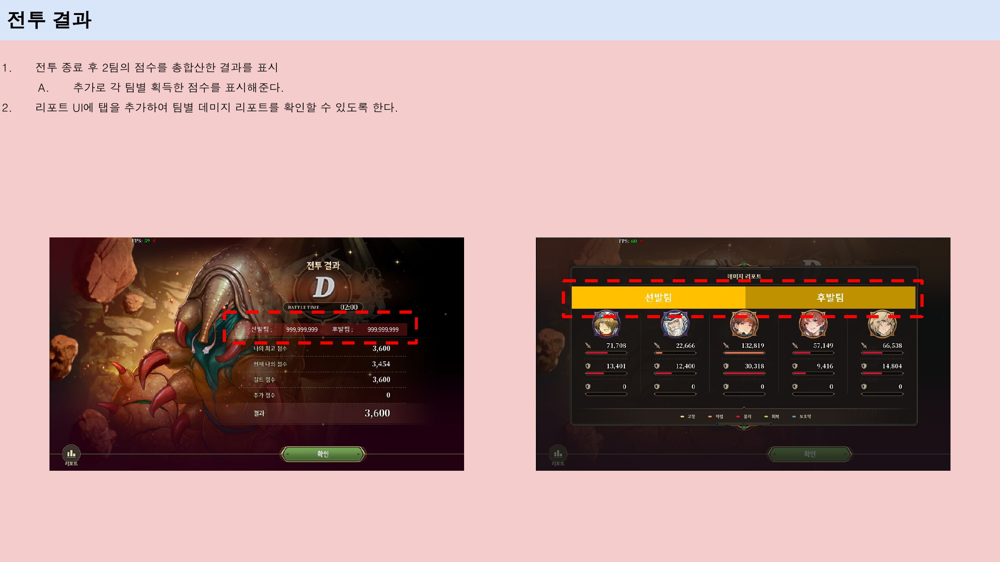
전투 결과와 리포트 두 팀의 합산 결과와 각 팀의 기여를 구분해 표시합니다.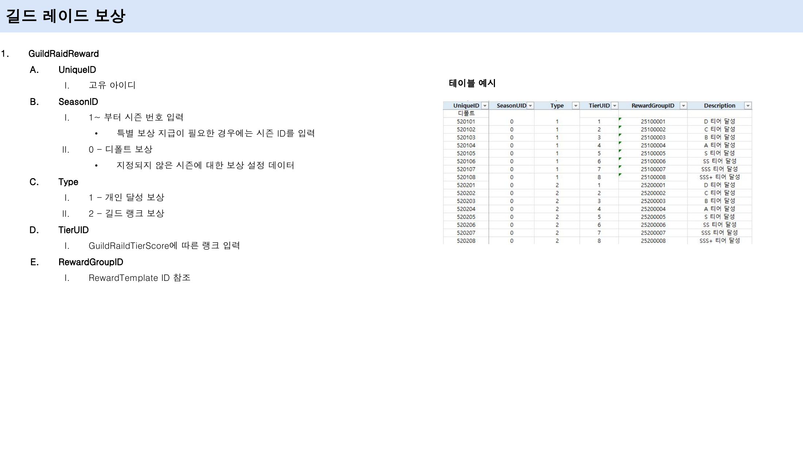
레이드 보상 테이블 시즌·보상 타입·티어에 따라 보상 그룹을 연결한 데이터 정의입니다.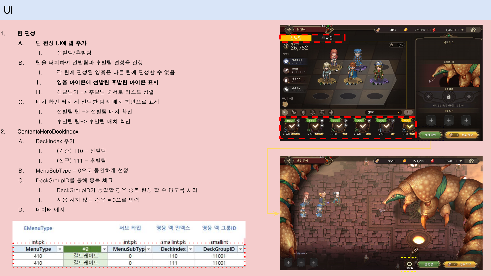
2팀 편성 데이터 정의 DeckIndex로 선발·후발팀을 나누고 동일한 DeckGroupID로 영웅 중복을 확인하도록 정의했습니다.영웅 레벨 돌파 · 계정 단위 성장 70레벨 이후의 레벨 증가, 최대 레벨 확장과 정수 해방을 구분하고 비용·조건·상태를 화면으로 정의했습니다.
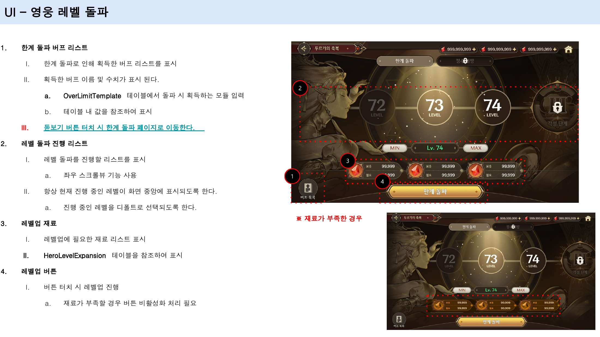
레벨 증가 UI 비용과 버튼 활성화 조건, 재료 부족 상태를 정의한 화면 시안입니다.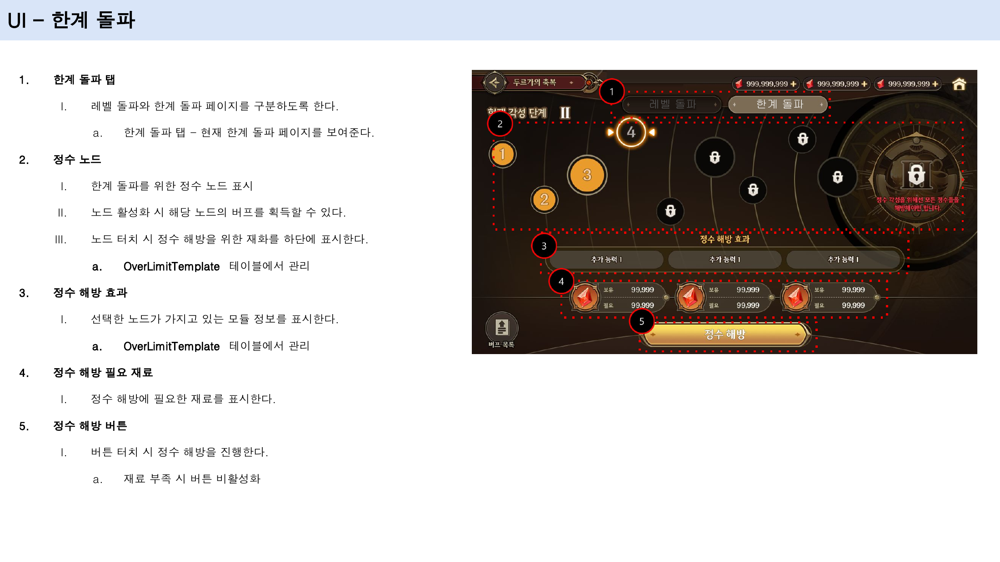
정수 해방과 한계 돌파 UI 노드와 능력치, 재료와 해금 조건의 UI 정의입니다.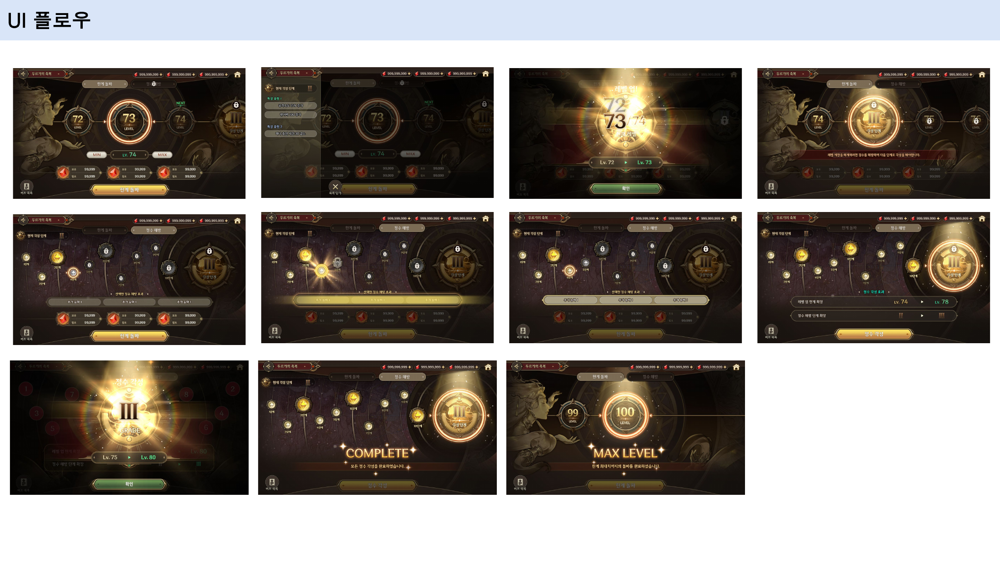
영웅 성장의 전체 화면 흐름 각 성장 행동과 확인·연출 화면의 연결을 정리한 흐름도입니다.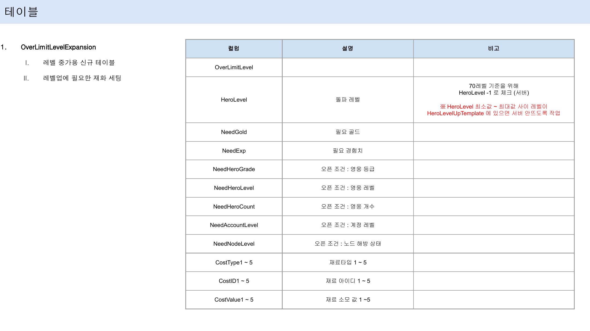
레벨 증가 테이블 레벨 증가 비용과 영웅·계정·노드의 해금 조건을 정의한 컬럼 설계입니다.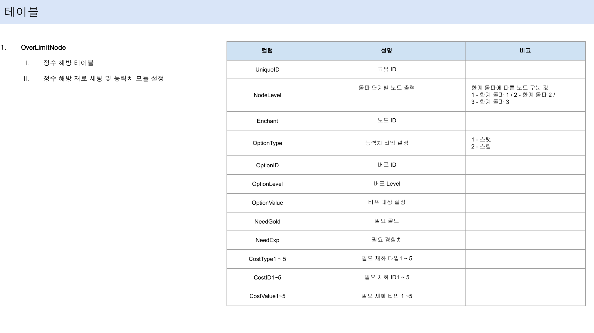
정수 해방 테이블 돌파 단계별 노드와 적용 효과, 재료 비용을 정의한 OverLimitNode의 컬럼 설계입니다.장비 등급별 가격 밸런스 장비 등급별 가격을 설정하고 가격 곡선을 검토한 밸런스 자료입니다.마을 판매 장비 밸런스 기준표 마을에서 판매하는 장비들의 기준값을 설정한 밸런스 표입니다.미니게임 업적 이벤트 재화 밸런스 미니게임 업적으로 획득 가능한 이벤트 재화의 보상을 설정한 밸런스 표입니다.